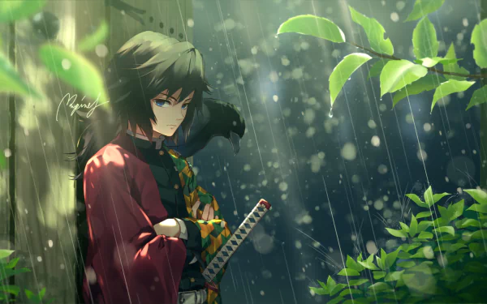

Water Hashira
Demon Slayer: Kimetsu no YaibaGiyu Tomioka is the Water Hashira of the Demon Slayer Corps, one of the nine most powerful swordsmen in the organization. Known for his stoic demeanor and exceptional swordsmanship, Giyu is a master of Water Breathing techniques. Despite his cold exterior, he carries a deep sense of responsibility and guilt from his past. He was the first person to recognize Tanjiro's potential and Nezuko's unique nature, showing his ability to see beyond conventional thinking. His signature haori, split between a solid red and geometric pattern, represents the two people most important to him - his late sister and his best friend Sabito.
Character Profile: Giyu Tomioka
Personality: Giyu appears aloof and emotionless, often struggling with social interactions. However, beneath his reserved nature lies a compassionate heart and unwavering dedication to protecting humanity from demons. He believes he's not worthy of being a Hashira, as he survived where his friends did not, showcasing his humble and self-critical nature.
Abilities: As the Water Hashira, Giyu has mastered all eleven forms of Water Breathing and even created his own technique - the Eleventh Form: Dead Calm. This unique ability allows him to create a zone of complete stillness where all incoming attacks are nullified. His combat skills are so refined that he can defeat powerful demons with minimal effort.
Role in the Story: Giyu serves as a mentor figure to Tanjiro, though their relationship starts rocky. He's the catalyst for Tanjiro's journey, sparing Nezuko's life and directing Tanjiro to Urokodaki. Throughout the series, he remains a reliable ally and demonstrates the true strength of a Hashira.